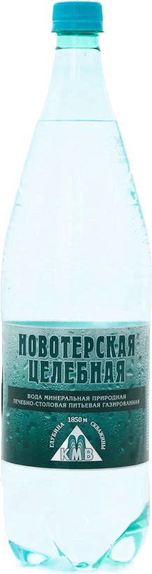
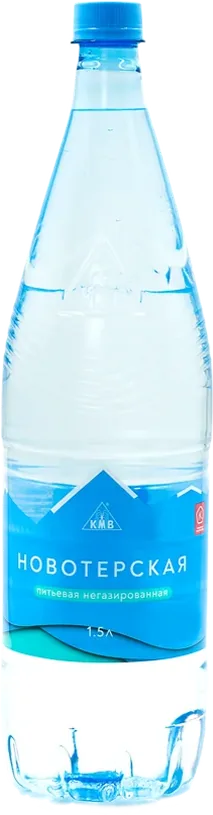

Продукция
Состав воды
Значения ниже приведены по документации производителя. Природная вода — состав живой: содержание каждого элемента колеблется в пределах указанного в таблицах диапазона.
«Новотерская целебная» — минеральная вода, скважина 66, «Бештаугорское месторождение»
Лечебно-столовая вода из высокотермального источника Ставропольского края. Все элементы находятся в наиболее удобном для организма растворённом виде.

| Компонент | Содержание | мг/л |
|---|---|---|
| Кремниевая кислота | 50 – 70 | |
| Магний | < 100 | |
| Кальций | 300 – 400 | |
| Хлориды | 300 – 500 | |
| Натрий+Калий | 800 – 1100 | |
| Сульфаты | 1200 – 1600 | |
| Гидрокарбонаты | 1300 – 1600 | |
| Минерализация | 4,0-5,5 г/л |
Полосы показывают диапазон от минимума до максимума по общей шкале 0 – 1600 мг/л.
Качество «Новотерской целебной» соответствует ГОСТ Р 54316-2020, международным требованиям FSSC 22000.
Содержит важнейшие для организма вещества
- Кремниевая кислота — участвует в образовании коллагена, положительно влияет на физическое и эмоциональное состояние, нормализует обмен веществ.
- Кальций — укрепляет костную систему, обладает радиозащитным действием.
- Магний — благотворно влияет на нервную систему, укрепляет иммунитет, поддерживает здоровье мышц.
- Калий — налаживает работу клеток, поддерживает здоровый метаболизм.
«Новотерская целебная» помогает выводить из организма токсины и радионуклиды — подтверждено исследованиями Института питания РАМН, ФМБА России, НИИ Кавказских Минеральных Вод.
Медицинские показания по применению
Болезни пищевода; хронический гастрит с нормальной и повышенной секреторной функцией желудка; язвенная болезнь желудка и 12-перстной кишки; болезни кишечника, печени, желчного пузыря и желчевыводящих путей, поджелудочной железы; нарушение органов пищеварения после оперативных вмешательств по поводу язвенной болезни желудка; постхолецистэктомические синдромы; болезни обмена веществ; болезни мочевыводящих путей.
При вышеуказанных заболеваниях вода применяется только вне фазы обострения.
Условия хранения
- Срок годности для ПЭТ-бутылок — 12–18 месяцев.
- Срок годности для стеклянных бутылок — 24 месяца.
- Хранить в тёмных сухих помещениях при температуре от +5 ℃ до +20 ℃.
«Новотерская» — питьевая негазированная
Натуральная питьевая вода, рождённая талыми водами ледников Эльбруса. Перед розливом вода проходит очистку с использованием природных компонентов, сохраняющих её натуральные полезные свойства. Великолепный вкус и сбалансированный химический состав определяют её мягкость и возможность употребления в пищу без ограничений.

| Компонент | Содержание | мг/л |
|---|---|---|
| Магний | 1,0 – 15,0 | |
| Кальций | 5,0 – 40,0 | |
| Сульфаты | 5,0 – 40,0 | |
| Хлориды | 5,0 – 40,0 | |
| Гидрокарбонаты | 30 – 200 | |
| Минерализация | 0,06–0,5 г/л |
Полосы показывают диапазон от минимума до максимума по общей шкале 0 – 200 мг/л.
Питьевая вода «Новотерская» соответствует требованиям ТУ 11.07.11-006-36800549-2019, международным требованиям FSSC 22000.
Условия хранения
- Срок годности — от 12 до 18 месяцев.
- Хранить в тёмных сухих помещениях при температуре от +2 до +20 °C и относительной влажности не выше 85%.
Откуда цифры
Состав подтверждён нормативными документами производителя — свидетельствами о государственной регистрации, декларациями о соответствии и сертификатом FSSC 22000. Все они опубликованы полностью на отдельной странице: документы и сертификаты.
Вопросы по составу и качеству воды — АО «Кавминводы»
тел./факс: +7 (87922) 7-14-09